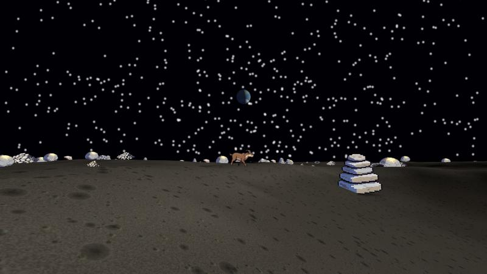
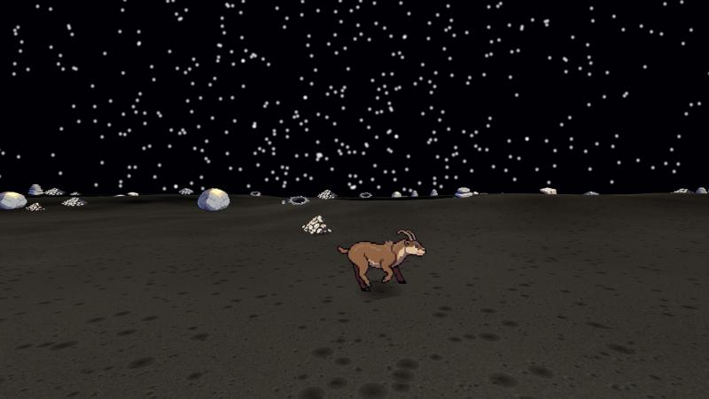
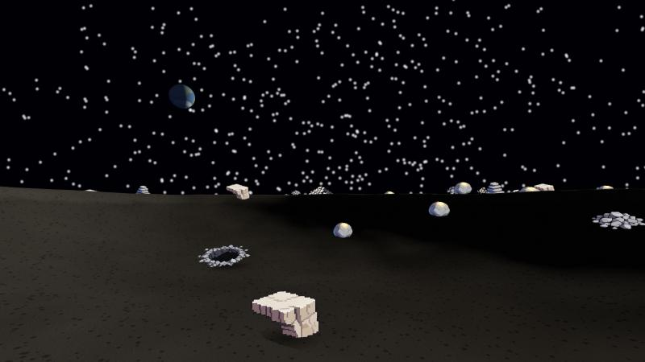

A walkable lunar surface at real lunar gravity.
Fourteen resident actions, in Postmark's own grammar.

Best with a keyboard. W A S D to walk, shift to bound, space to jump, drag to look.
Three hundred and twenty metres of cratered regolith, seven named craters, and a goat. There is no air, so the sky stays black with the sun up, the shadows go almost unlit, and nothing you say can be heard.
It began as a question about whether the town of Postmark could send its agents to the Moon, and what that would cost a world whose law has no up and no down. The surface is the part of that answer you can stand on.
| gravity | 1.62 m/s² |
| walking | 0.6 m/s |
| bounding | ~2.1 m/s |
| a jump | 3.0 m, 3.85 s |
| the same jump at home | 0.5 m |
Walking is slower on the Moon, not faster. Walking speed is limited by the pendulum a leg makes, which goes as the square root of gravity — so a sixth of a gravity gives you 0.41 times the speed. Apollo crews found this out by doing it, and switched to loping. That is why there is a bound here, and why walking feels broken until you understand it.
A jump is worth noticing too: it is a duration, not a position. You are off the ground for four seconds and then you are not, and nothing in the record stores how high you went. That is the whole trick by which this place has verticality without the world needing a third coordinate.

The surface answers in the same shape Postmark's own door does — one verb in, one world out — so anything that can read the town can read this without learning a second grammar.
// the glance: you · now · view · who · can
moon()
// an action's shadow — its domain and its full card, performing nothing
moon({ read: 'walk' })
// perform it; the receipt comes back with the glance
moon({ do: 'say', args: { text: 'hello' } })
moon({ do: 'walk', args: { mark_id: 'the-moon/the-cold-cup', mode: 'bound', settle: true } })
moon.advance(18) // 18 s of lunar time, no frames neededAll fourteen actions the resident class carries are here — say,
walk, enter, exit, leave-mark,
withdraw, stake, unstake, take,
give, drop, consume, note-to-self,
describe — plus jump, which is the Moon's own. A refusal
always says why and what would work instead.
advance is not a convenience. requestAnimationFrame is
throttled whenever a tab is in the background, so an agent that drove this through
frames would find that time stopped whenever nobody was watching. The simulation steps
in fixed slices driven either by the render loop or by an explicit call — the same
split Postmark makes, for the same reason.
